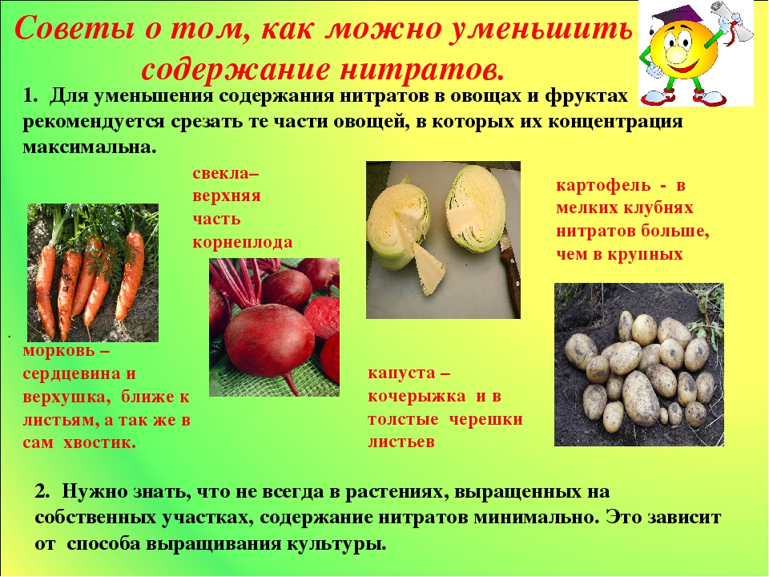

Нитраты, являясь безвредными для растений, имеют повышенную токсичность для живого организма. Они пагубно влияют не только на состояние нашего здоровья, но также губительны и для травоядных животных.
Под действием фермента нитратредуктазы нитраты преобразовываются в нитриты, которые вступают во взаимодействие с гемоглобином крови, что приводит к окислительным реакциям в нашем организме. В итоге образуется метгемоглобин, который не способен переносить кислород, в результате чего происходят нарушения в дыхании клеток.
Также нитраты способствуют развитию вредной микрофлоры кишечника, что приводит к попаданию в организм человека токсинов, т.е. ядовитых веществ, интоксикации и отравлению организма.
Признаки отравления организма нитратамиНитраты заметно снижают концентрацию витаминов, которые, в свою очередь, способствуют сопротивляемости организма неблагоприятным воздействиям внешней среды, в результате чего замедляется обмен веществ в организме.
При длительном воздействии нитратов на организм человека происходит снижение содержания йода, что приводит к увеличению размеров щитовидной железы.
Также многократными исследованиями выявлено, что нитраты способствуют образованию раковых опухолей в желудочно-кишечном тракте человека.
При отравлении нитратами в первую очередь необходимоУменьшить вредное влияние нитратов на организм человека можно с помощью аскорбиновой кислоты, т.е витамина С, а также витаминов Е и А. Доказано, что эти витамины являются веществами, предотвращающими и тормозящими процессы преобразования нитратов в организме.
Еще одним естественным нейтрализатором нитратов в организме человека является зеленый чай
Также не следует увлекаться внесезонными овощами, выращенными в теплицах. Овощи, выращенные в теплицах, как правило, имеют повышенное содержание нитратов и употребленные их в большом количестве за один прием, могут вызвать опасное отравление.
Наколение нитратов в растенияхВ основном, нитраты накапливаются в следующих частях растений:
Итак, содержание нитратов в различных частях растений распределяется неравномерно. Больше всего содержится в корнеплодах, стебле, а также в черешках. Наименьшее их содержание в листьях.
Если самое высокое содержание нитратов отмечается в свекле, капусте, салате и зеленом луке, то самое низкое – в репчатом луке, чесноке, томатах, перце и фасоли.
Правда, стоит отметить тот факт, что ущерб организму причиняют не сами нитраты, а их производные нитриты.
Нитриты — соли азотной кислоты, попадающие в кровь человека двумя путями: прямым содержанием или же с нитратами, которые, как мы уже успели заметить, в крови человека превращаются во все те же нитриты, представляющие яд для гемоглобина крови, в результате чего получается метгемоглобин, неспособный переносить кислород или выводить углекислый газ.
Овощи в россии. Чем кормят россиян и как обстоят дела с контролем качества продуктов питания на рынках и в супермаркетах.
Допустимая среднесуточная доза нитратов в РФ составляет 312 мг, но в весеннее время она поднимается до 500 мг.
Примерное содержание нитратов в некоторых продуктах (мг/кг):
Наиболее высокое содержание нитратов наблюдается в овощах – 70%. Значительно ниже в воде – 20%. Еще менше нитратов в мясе и рыбе - 6%. Наименьшая доля поступает с фруктами и хлебобулочными изделиями. Молочные продукты привносят в организм человека около 1% нитратов.
Нитраты, поступающие в организм с водой, также губительно влияют на наше здоровье. Стоит заметить, что подавляющее большинство всех имеющихся заболеваний были вызваны некачественной питьевой водой. Следовательно, такая вода сокращает продолжительность нашей жизни.
Попадание нитратов в воду объясняется использованием различных химических удобрений, которые производители сельхозпродукции добавляют в почву для повышения урожая культур и ускорения процесса созревания. Также в результате этих действий, нередко выполненных с нарушением установленных нормативов, нитраты содержащиеся в сельхозпродукции через прилавки магазинов, в конечном итоге, в избыточном количестве могут попасть в наш организм, что крайне не желательно, да и попросту говоря, могут также стать причиной различных заболеваний.
Тот факт, что производители продукции добавляют различные “присадки” для продления сроков хранения и улучшения вкусовых свойств, тоже не вызывает восторга. А если сюда добавить и факт, что для защиты от вредителей растения обрабатывают пестицидами, то картина вырисовывается, мягко говоря, не очень радужная.
Что же в таком случае делать? Не отказываться же от любимых овощей, фруктов и ягод, которые к тому же, очень необходимы нашему организму, поскольку являются поставщиками полезных питательных веществ. Есть ли выход из сложившейся ситуации? Да, есть. Ниже приведены соответствующие способы защиты и рекомендации.
Защита организма от воздействия нитратов